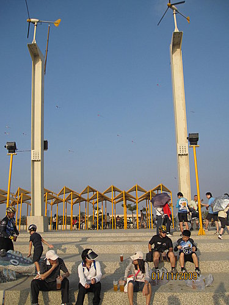
樂觀地勇往直前
相信自己─I can do this! ALWAYS be…POSITIVE!


～～一則有趣的網路寓言～～
有一天，一群小青蛙們決定來場跑步比賽 比賽最終目標就是到達一個很高很高的高塔 一大群群眾圍繞著高塔觀看並歡呼所有的競爭者 比賽開始了 說真格的，群眾中沒有人會相信… 看好這群小青蛙們會到達高塔 此時，你就聽到周遭群眾鼓譟 “喔！這太難了！他們絕對辦不到的！” 或是 “他們連一點勝算都沒有，高塔實在太高了！” 小青蛙們聽到，一個接著一個放棄了！ 但還是有些小青蛙踏著節拍爬得更高 群眾還是繼續鼓譟
“這太難了！沒有人可以達到！”
又有一批小青蛙們疲倦而放棄了
最後只剩一隻小青蛙沒有放棄，繼續愈爬愈高
這隻小青蛙沒有放棄！
最後到達終點，只有一隻小青蛙，其餘的都放棄了
這隻小青蛙邁開大步到達最後終點！
但是，所有的小青蛙們都想知道他是如何辦到的？
有一個跑者忍不住問了那隻小青蛙：
“你是如何堅持跑到終點的呢？”
突然
一片靜寂
這個贏家是……
一隻耳聾的青蛙
這個故事的啟示：
Never listen to other people’s tendencies to be
negative or pessimistic…
絕對不要聽從人們負面的批評或悲觀的看法
─〈青蛙爬高塔〉 Mann_MeeT／尤俊傑 翻譯
活動時間：98.11.1 14:00～19:00
活動路線（約30公里 ）：
河東路門口集合→（愛河自行車道）黃金愛河→（西臨港線自行車道）駁二藝術特區→漁人碼頭→鼓山輪渡站搭渡輪→（旗津環島踩風自行車道）旗津輪渡站→旗津海水浴場噴泉廣場→星光隧道→旗津海岸公園→沿著踩風大道→風車公園（飲50藍好茶）→高字塔（看日頭落山）→回風車公園→萬二海產（晚餐自由參加）→
中洲渡輪站搭渡輪→經夢時代→（西臨港線自行車道）星光水岸公園→新光碼頭→光榮碼頭→木棧道→（愛河自行車道）黃金愛河→中正橋→溫暖的家
【集合】
感謝社長超兄、副社長ted等人為我們規劃的這次旗津之旅，因為他們的付出，使得車友們在忙碌的工作之餘，享有健康、愉快、愜意的生活。
今天天氣蠻熱的，利用集合時間，車友互相打氣、檢查車況…，社長提醒大家此行路線及應注意事項。
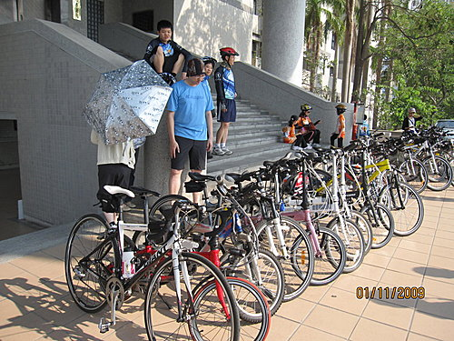
【拍照後出發】─宣揚隊伍精神
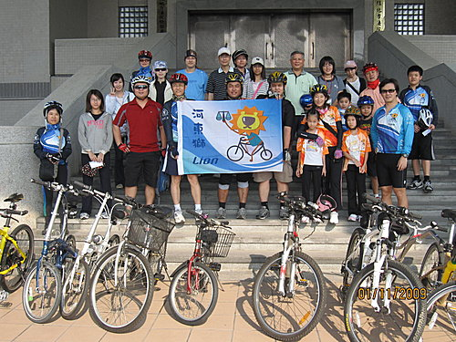
浪漫的【黃金愛河】
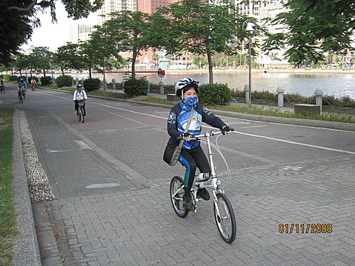
【駁二藝術特區】
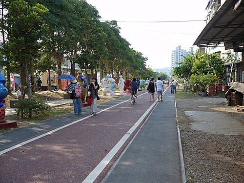
去年，這條路原本較窄，據社長說是上菊姐信箱反應，終於，菊姐有聽到我們的心聲，擴充一線，修過之後，路面更平更好騎。
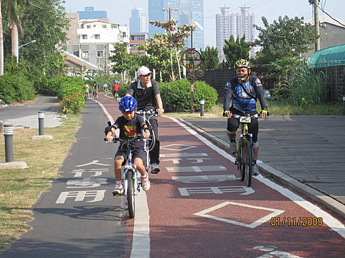
大明兄家族同遊
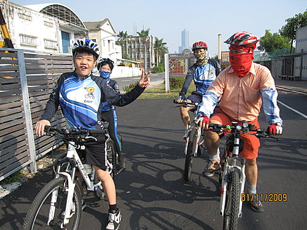 【鼓山輪渡站】
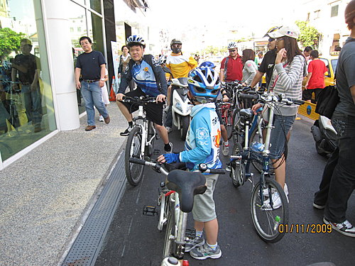
坐旗津渡輪、中洲渡輪、公車、或捷運都可用悠遊卡，買張悠遊卡是很值得的。
鼓山渡輪站附近不久前建了一座【觀景橋】 ，通西子灣。
，通西子灣。
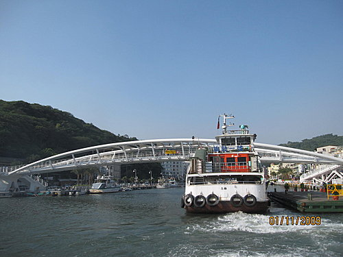
從旗津輪渡站騎到海水浴場噴泉廣場
在這裡要集合一下再前進
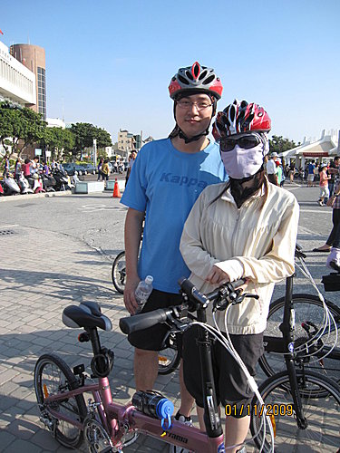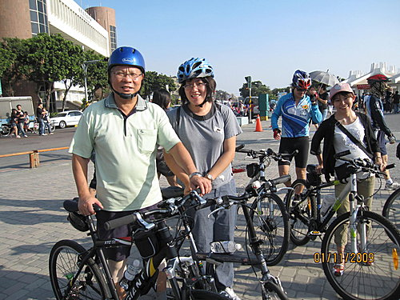
前進【星光隧道】
裡面蠻暗的，記得進入前要開燈喔！
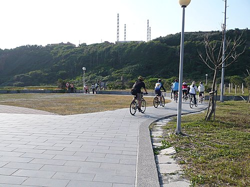
穿過星光隧道後，天色為之一亮，湛藍的海天共色，青山綠水相輝映，讓人忍不住往海邊走去。
受88水災影響所及，此處前方山路阻斷，所以沒能再往旗后砲台前進。
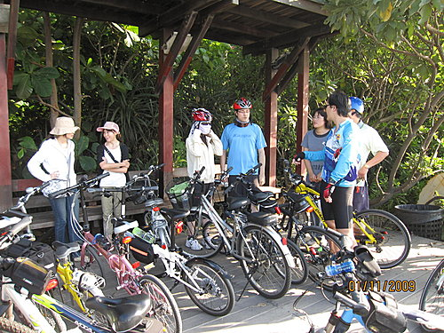
雖然太陽火熱地高掛西邊，仍阻擋不了我們對大海的熱愛。

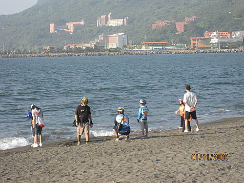
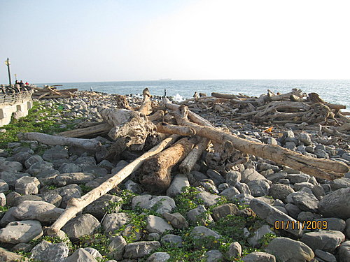
再SHOW一下勇往直前的小獅隊旗吧！
帥哥美女是本車隊的招牌版面！
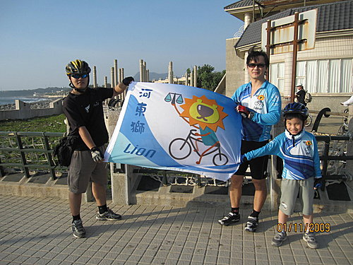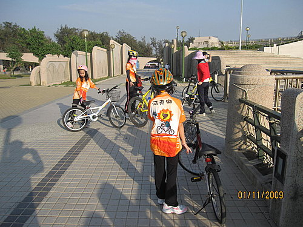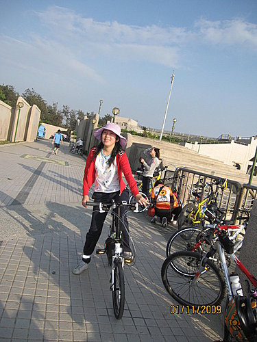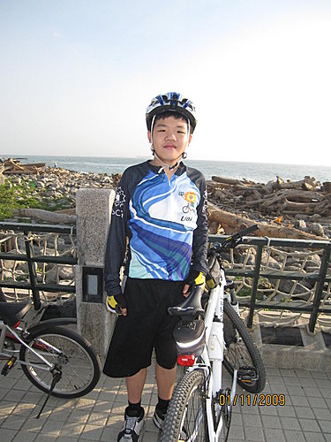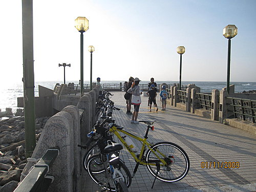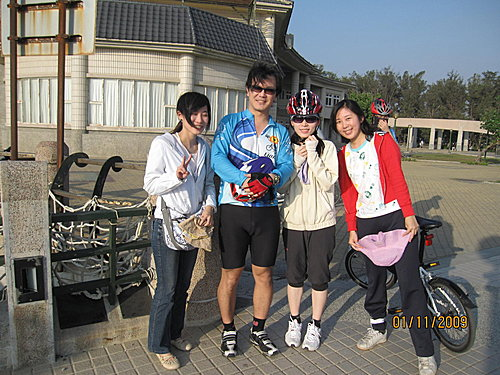
到達【風車公園】，享用社長預訂的50藍冰茶。
全家出遊─幸福唷！
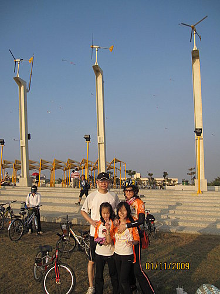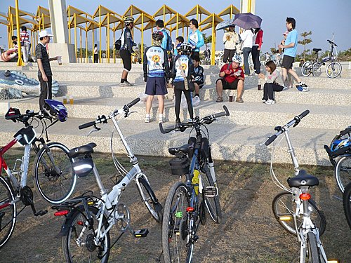
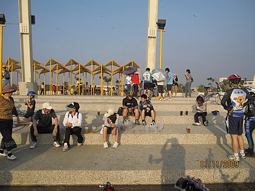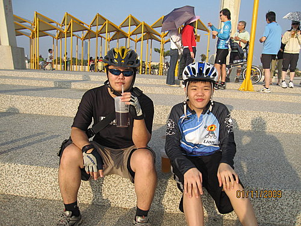
能騎到這裡已經是不簡單了，為我們勇往直前的精神鼓鼓掌吧！
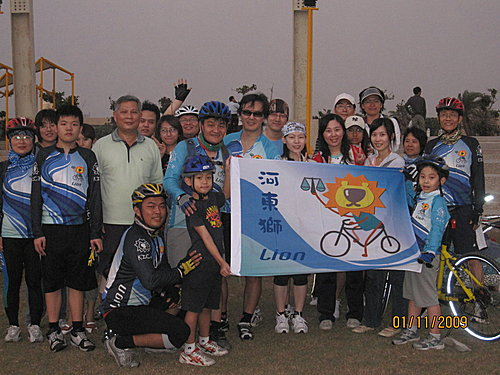
從風車公園到高字塔，來回至少半小時，為騎完全程，車隊人馬相繼往高字塔方向前進。
終點站
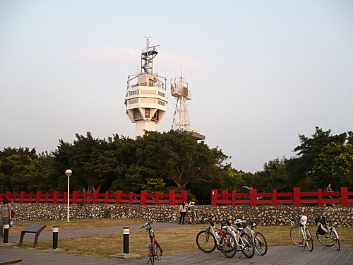
在此欣賞落日餘暉，別有一番情趣。

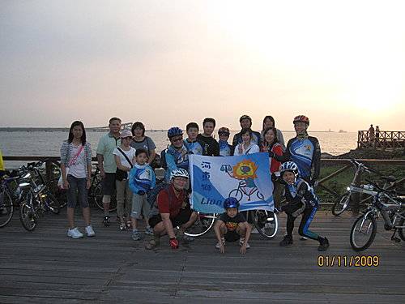
往回騎的路上，好美的夕陽啊！
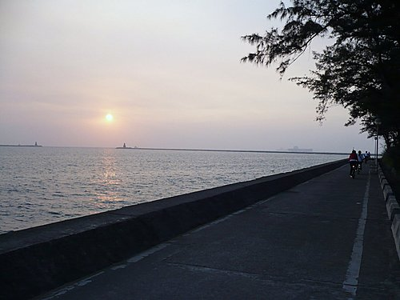
返回風車公園集合後，天黑了，繼續往【萬二小吃部】，休息、飽餐一頓吧。
酷弟給我一張餐卷，我以為是優惠卷，原來是用此餐卷來拿菜啊！菜色不錯喔！
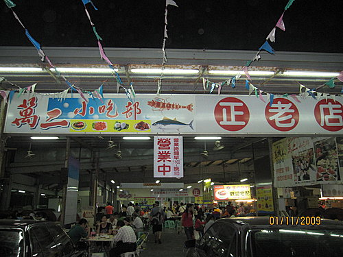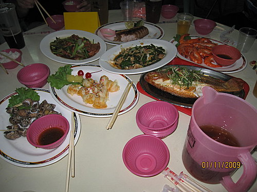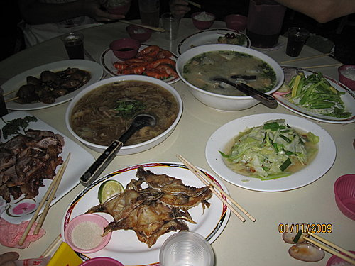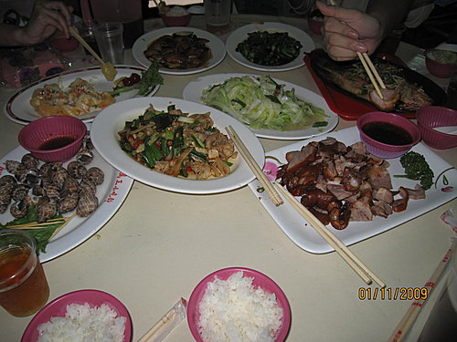
臨時有識途老兄介紹我們到【中洲渡輪站】搭船，因此又多認識一條路線了。
這裡的渡輪可載15噸的機械2輛，和我們一起搭的還有一輛汽車呢！
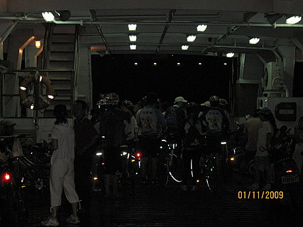
酷弟是這次的小嚮導，精力充沛，玩得很盡興呢！
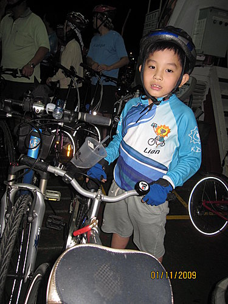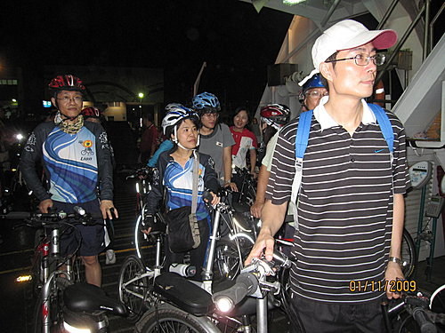
懷著依依不捨、疲憊的心情，跟旗津說拜拜了。
渡輪載我們到對岸夢時代商圈，當然，從夢時代到碼頭，是一段優美的【西臨港線自行車道】，在這樣的夜晚騎乘其間，也是另一種享受唷！
看見大小獅友們以孔明車 串連高雄美景--- 愛河、港口、渡輪、隧道、沙灘、海鮮、美食-- 真是幸福之旅哦.............. 錯過的朋友們， 下次記得提早報名喲... 錯過此行的隊長 留